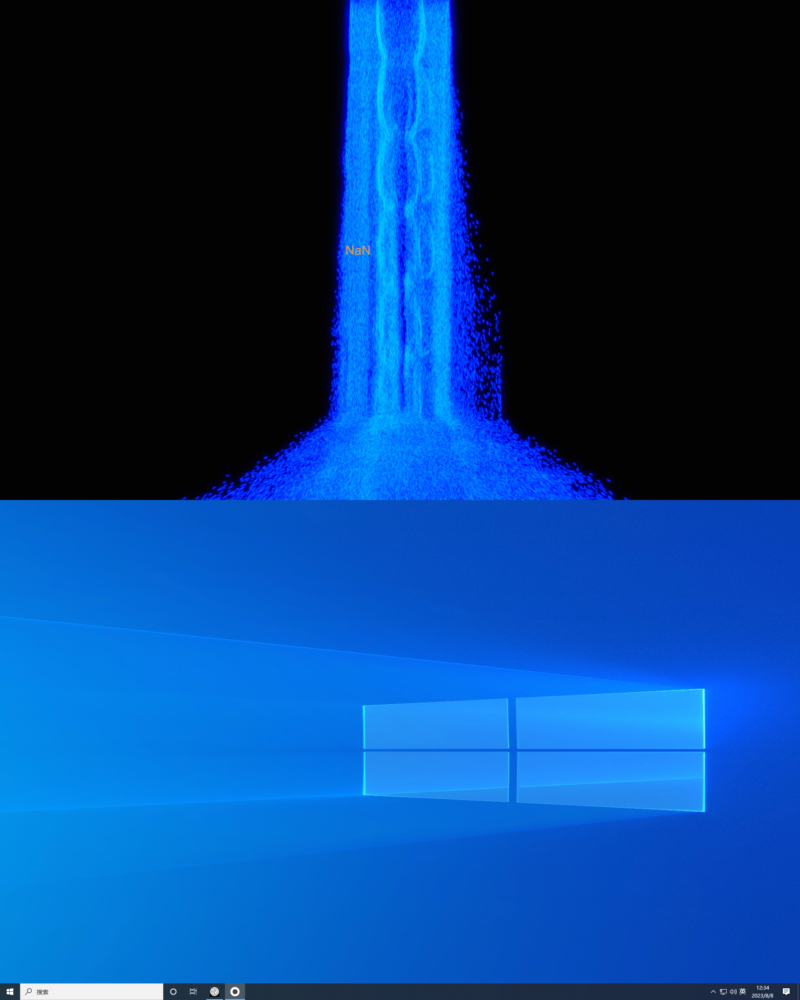

常见问题排查¶
通用¶
投影仪没画面怎么办？¶
这个时候我们首先要看对应幕墙的颜色。如果是黑色，多为投影仪没有开，或者长时间没检测到信号自己关了；如果是蓝色的未检测到信号界面，则多为电脑没有正常启动。 检查对应主机。如果没有自启成功，按下电源键，手动开机。
没能正常打开或关闭怎么办？¶
有的时候，投影机、电脑、灯光可能会出现明明开馆或闭馆了，但是它没有听指令打开或关闭的情况。 这往往是由于网络拥塞导致的。解决方法一般有以下几种：
- 电脑启动关闭异常
如果没能正常启动，进入机房，打开机柜，手动启动对应主机电源。
- 投影仪启动关闭异常
如果开馆闭馆按钮不起作用，则在iPad上点击
设备控制-投影仪，打开或关闭对应的投影仪。
- 灯光启动关闭异常
在iPad上点击
设备控制-投影仪，打开或关闭对应的投影仪。还不行的话，进入机房，打开或关闭对应的空气开关。
展项的程序在哪里？¶
同时按下Windows徽标键和R，在运行栏中输入 shell:startup ，回车后打开自启动文件夹。
右键对应程序，在属性中可以找到文件程序所在的路径。在资源管理器中找到此路径，即可看到展项所使用的文件。
备注
这个 shell:startup 是什么？
是快速打开自启文件夹的命令。 软件经常有很多版本，所以我们并不提供具体某个固定的路径，而是每次更新自启文件夹中的快捷方式，指向当前版本的程序。
想要快速进入自启文件夹，可以同时按下 Windows + R 键，在唤出的运行程序打开栏中，输入 shell:startup，即可进入。
同样的，这里放哪个版本程序的快捷方式，开机后就会自动运行哪个版本的程序。
画面只出来了一半怎么办？¶
首先判断是不是投影机或电脑没打开，这部分排查顺序详见 没能正常打开或关闭怎么办？ 部分。 如果是一半展项投影一半桌面投影（偶发于多投影展项：蝶舞 (2)、飞花 (2)、超脑 (4)、止水(2)），则可以判断问题是 跨屏设置失效 导致的。 下面以止水展项为例，说明解决步骤：
{kind=link}
在Windows桌面右键，选择
Nvidia控制面板，打开显卡的设置界面。

在
设置Mosaic模式中，点击新建配置，重新建立跨屏方案设置。

在
选择布局中，按照实际调整布局。蝶舞、飞花是1行2列，超脑是1行4列，止水是2行1列。

在
选择显示器中，确认两个显示器各自的编号。

注意
蝶舞、止水的显示器分辨率不是1920*1080，而是1920*1200。
在
排列显示器中，鼠标左键拖动显示器方框至下方布局图相应位置，指定显示器排列布局。

稍等10秒左右，画面会正常跨屏融合。没有问题的话，在弹出的窗口中点击
下一步。

一路下一步，直到点击
结束。跨屏融合修复完成。
{kind=link}
蝶舞¶
为什么上面的红圈不跟着我眼睛动？¶
确认眼动仪通电，前面板有红光亮起。背面磁吸稳固。
确认是看着面前的展板，而非投影墙。
确保眼动仪的前面板和人脸平面呈平行关系。可通过调节眼动仪安装架（合页）或坐姿实现。
不要佩戴有镀膜的眼镜或隐形眼镜。
飞花¶
为什么我做表情画面也不变？¶
- 首先确保后台正确打开。请参照 展项操作流程。其中，尤其要检查
API
FaceReaderExternalControlSample是否连接上。有没有超过最大采集时长，导致采集自动停止
采集时间有没有超过30分钟，出现较大延迟
打开
FaceReader软件在最前，站准地标，看向摄像头。根据FaceReader软件中视频的反馈调整自己的位置。如果发现摄像头拍摄位置异常，请参照 如何调整摄像头？。
小技巧
当前地标的位置及摄像头设定是按照155-185身高进行的适配。
交替做正向表情（笑）和负向表情（愤怒、厌恶、害怕等）。观察
FaceReader界面右下角的效价曲线，能否随着表情变化跨越0值（x轴）。如果确实有变化，但无法过轴，则说明该面孔相对于模型具有初始偏差（如“看着就喜庆”、“一脸横肉”、“看着凶”等）。如果该面孔需要频繁演示，建议单独建立参与者并做单独校准。
如果还没有变化，可使用准备间器材柜中的圆形示例面孔板（女明星笑&哭），站在地标上面向摄像头，举起遮住脸。看效价曲线有没有反应。如果有反应，则该面孔需要提供更生动的表情；如果没有反应，请联系 联系我们。
如何调整摄像头？¶
连接至飞花主机的远程桌面，在远程桌面中打开网页浏览器，输入摄像头的IP网址。
备注
左摄像头IP地址
http://192.168.1.129/ISAPI/Streaming/channels/102/httpPreview右摄像头IP地址
http://192.168.1.130/ISAPI/Streaming/channels/102/httpPreview账户 admin；密码 Noldus123
在
预览标签页（首页）中，在右上角云台处，调整摄像头的角度和焦距。保存为预置点1。
超脑¶
连接不到脑电帽怎么办？¶
站在弧形展墙（超脑项目）旁，检查脑电帽有没有开机，电量够不够
关闭脑电帽，重新开机，查看设备有没有出现
远程桌面连接超脑主机后，在远程桌面的状态栏右键关闭软件，重启软件，查看设备有没有出现
进入设备间，插拔对应展项的USB接收器，查看设备有没有出现
{kind=link}
重启电脑，查看设备有没有出现
止水¶
连接不到脑电帽怎么办？¶
请参照超脑环节 连接不到脑电帽怎么办？。
幻境¶
提示找不到头戴设备怎么办？¶
在幕墙侧维修通道中，找到分线器。观察状态指示灯。如果为灭，按动蓝色按钮，至亮。然后重启电脑。
提示无法启动SteamVR怎么办？¶
请检查网络连接，并重启电脑。
电视画面正常但是头显内有额外窗口怎么办？¶
在机房的机柜内可以找到VR头显的手柄。手柄开机，拿到展项前。正确识别后，左下角SteamVR的小窗口中手柄标会亮起，同时手柄会出现在头显画面中。像操作激光笔一样操作手柄，关闭眼前的窗口。食指处的扳机键相当于鼠标点击键。
幻境展项正常工作指征
游戏演示自动播放 / 处于虚拟货架初始位置
左下角有SteamVR小窗口
拿起头盔，面向电视，左右上下旋转。若片刻后画面跟随运动，且头盔内画面一致，则项目正常
镜心¶
测谎环节抠像失败怎么办？¶
该情况多为其它软件弹窗导致的。最简单的方法就是在远程桌面中对镜心主机进行重新启动。
注意
由于体感摄像头Kinect的驱动对鼠标动作敏感，重启后请立刻关闭VNC远程桌面的窗口
联系我们¶
“我看不懂！搞不定了！怎么办！”
曲若衡
诺达思技术工程师
18618198201（微信同）